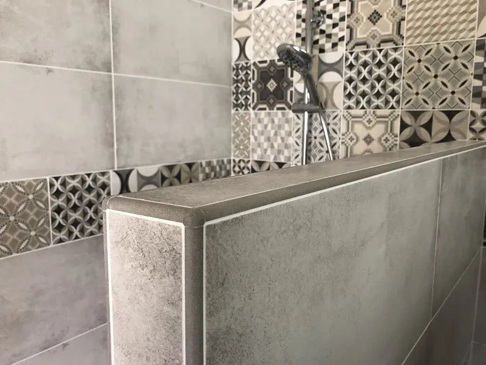
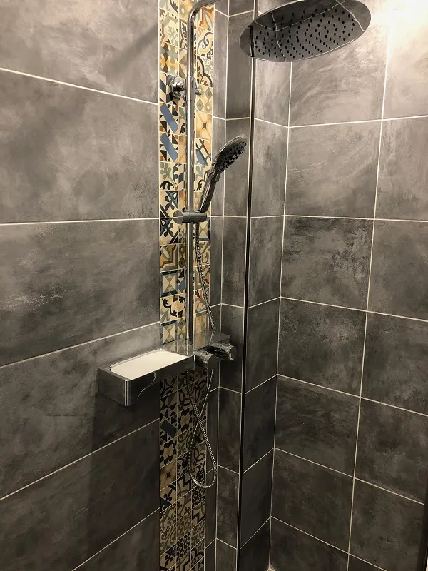
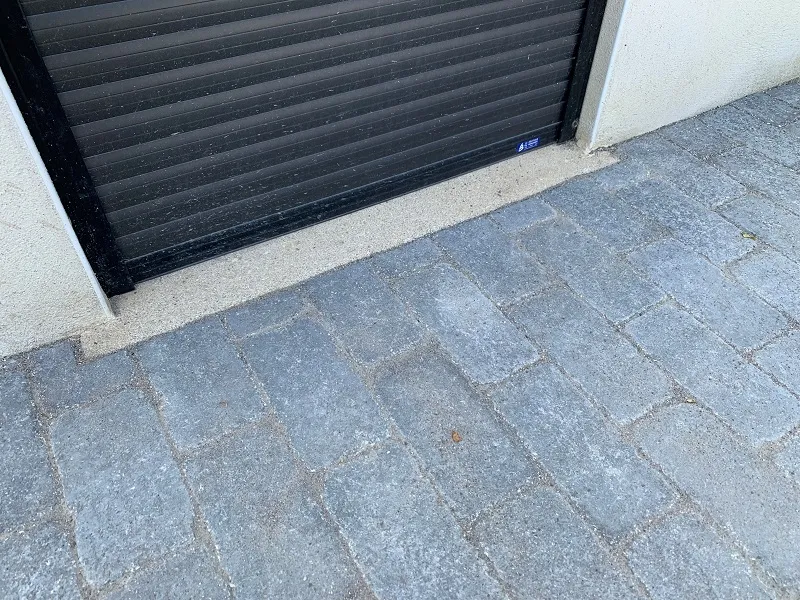
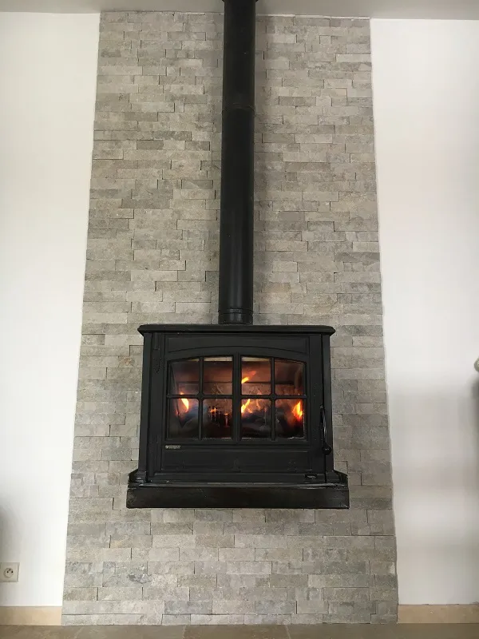
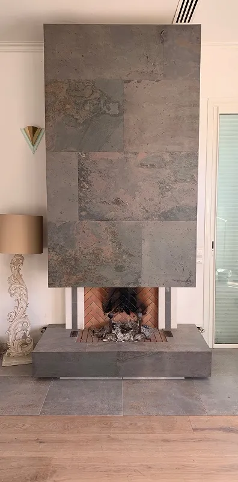
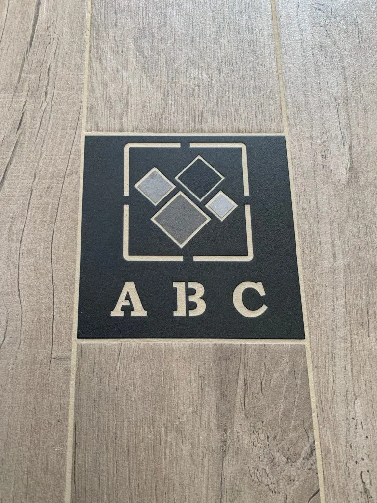

SDB travertin + frise feuille d'or, Manosque

Niche travertin + frise or, Manosque

SDB 30x60 + carreaux ciment, Oraison

Profilé finition + pièce angle, Oraison

SDB anthracite + frise carreaux ciment, Oraison

SDB dans sous-sol voûté, Mirabeau

Rénovation SDB imitation travertin, Manosque

Faïence WC 120x120, Vinon-sur-Verdon

Pavés autobloquants anthracite, Oraison

Pavés autobloquants, Oraison

Pavés terminés, Oraison

Travertin 40x60, Saint-Michel-l'Observatoire

Piscine travertin sans margelle, Aix-en-Provence

Terrasse imitation parquet + hexagonal, Forcalquier

Détail hexagonal effet cube, Forcalquier

Escalier noir 60x60 poli + inox brossé

Escalier imitation parquet + feuille de pierre, Volx

Détail escalier, Volx

Parement cheminée briquette, Pierrevert

Parement feuille de pierre cheminée, Manosque

Feuille de pierre cheminée (vue large), Manosque

Logo personnalisé intégré au carrelage

Coulage chape fluide, Manosque

Chape fluide en cours
Votre projet est le prochain.
Devis gratuit et sans engagement. On vous répond sous 48h.
Demander un devis gratuit